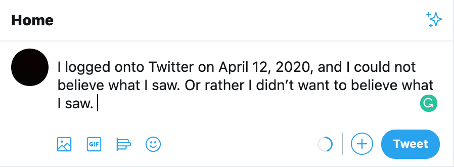
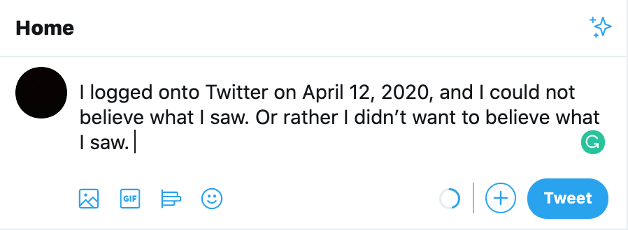
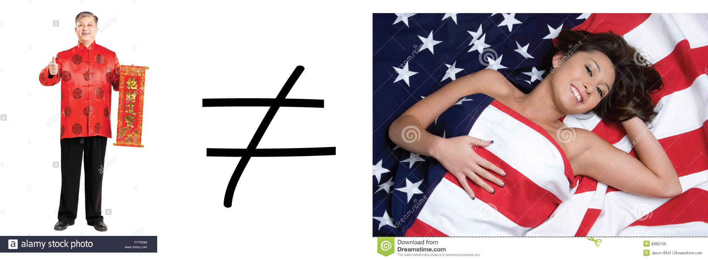
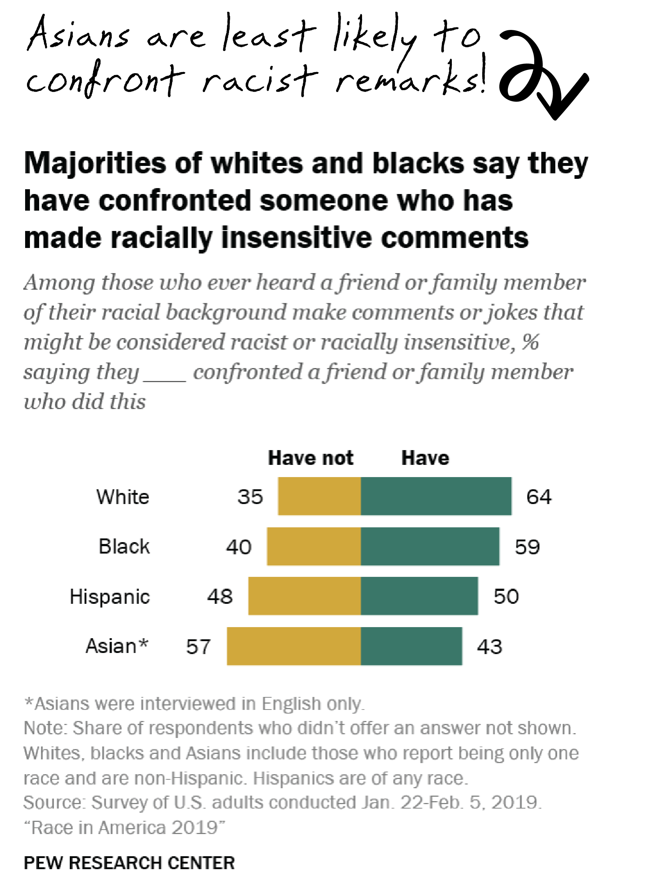
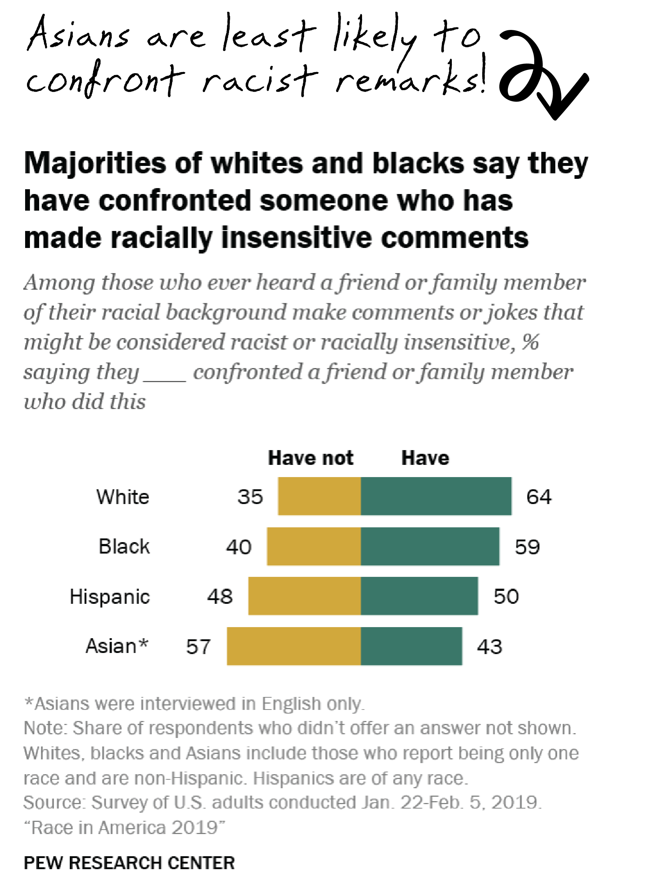
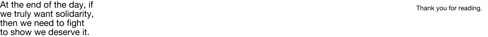

Black people in China are being blamed for the uptick in imported COVID-19 cases.
Reports of Africans being evicted from housing and banned from restaurants and stores came flooding in.
The main incidents have been in Guangzhou, one of the most African-immigrant-concentrated cities in China, where I lived for 8 years.
Faced with the anti-Asian hate from black folks in the comments, my instinctive reaction was dismissive anger. In fact, I was so pissed that I had to log off Twitter. Yes, what those people are doing are horrible, but what’s that got to do with me? How dare you make a generalizing statement and direct hate towards Asians especially during these times? Do you hear yourself? They’re Chinese people living in China, for christ’s sake.

I immediately text my Asian friends to rant about how dead POC solidarity is. Then, in a moment of post-text clarity, it sank in.
I feel a wave of guilt wash over me. Who am I kidding. Anti-blackness has always been an issue in the Asian community, especially with the older generation. Me and my Asian friends always joke about how racist our parents are. But that’s all we do about it: make jokes. I have long given up on fighting my parents, or other Asians, on their inappropriate remarks. It’s just another thing I sweep under the rug.
That’s why I wasn’t shocked at all to hear about the incidents. I was probably more shocked that it actually made its way to Twitter.
This blatant anti-black racism coming into the open in such large scale feels like a light switch. Clink. The lights are on, exposing me crouching in the corner of an empty room, nowhere to hide.
To even think about uttering the phrase, “we’re not all like this!” feels futile. So what? The truth is, it happened. It is being and has been commited by a considerable amount of Chinese people and other Asians, for a long time. The phrase serves no further purpose than to point fingers and evade accountability.
 

I am most ashamed to say that during the height of COVID-19, it is black folks that have stood up for us the most. MLK’s daughter Bernice King, Spike Lee, RZA are among the many black celebrities who have called out Anti-Asian behavior and expressed support for the Asian community. Of all minorities, black folks, despite having the most on their plates, are always willing to stick up for us. How often do we see Asian celebrities calling out anti-black racism? Few members of the Asian community are willing to rush to the defense for other communities when they’re in need, but we expect solidarity from other POCs when it comes to an issue that concerns us.
Mikki Kendall started the hashtag #notYourMule to point out exactly that, as the work the black folks, especially black women, put into fighting for civil rights has brought visibility to so many issues affecting non-black POCs, but it is rarely reciprocated. That is, black folks are often alone in their civil fights until it impacts other communities. Solidarity was never supposed to be a one-way street.
